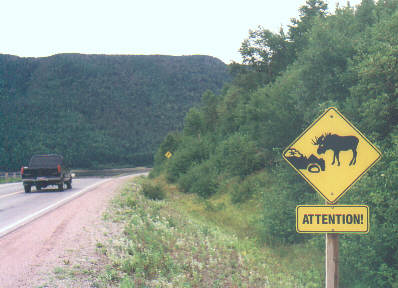 . 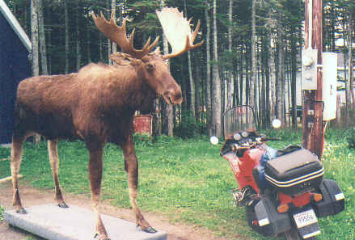
Bad enough in a
car .....
Don't try it on a bike !
Then I hear stories of all the people he knows (living and passed on) who have run into moose in cars, trucks and even bikes ( no thanks ). A common theme in Nfld, and part of the reason I drive very little at night there when I can avoid it. A local friend once stopped at night to help a Miata sports car driver who was looking for his antenna by the road after cruising under the belly of a moose standing sideways . No other damage besides his nerves. These animals are huge, up to 1800 lbs , and parts of western Nfld have 7 per sq km, the highest density in the world. There are 400,000 on the island, plus caribou. I sit and eat, watching the sunset and listening to hundreds of seabirds nesting offshore on a rocky island. More sleep.
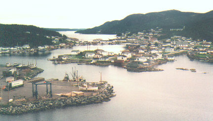
Englee from lookout viewing east
DAY 6: Sunny day, go to a lookout 200 ft up on an island where the locals are finishing a long stairway for the tourists to climb. Crew of 4 men who are very funny, joking a lot, ask me about my bike and tell me more stories of the coastline and small communities like Canada Hbr you can only get to by boat. They tell me there is a huge iceberg up north a few miles, at least half a mile long and very high, but I can't see it from there. Too bad. Back on the bike and head west 100 kms to the main coast road again near Plum Point. No traffic, great pavement across long plateaux of forest, wide vistas. Turn left at the coast and head south down to Port au Choix. See a small gravel road branching off to the right with no signs just south of Eddie's Cove West. There are a lot of tire marks heading in. This must go somewhere important, in Nfld it usually means a shortcut for the locals. Off we go ! Drive 10 kms or more on a delightful coastal dirt road in great shape and come out at Port au Choix, a large fishing town. I have just saved driving the other 2 sides of a triangle and a lot of kms.
Ate donuts and went to the end of the road, a nice grassy barrens with walking trails and signs past the fish plant. Was keen to get to Gros Morne Park farther south , so ran down the coast to Daniel's Hbr where I stopped for food at a chip wagon. Fish and chips were $ 8 , and I wasn't in the mood for chips, so I asked the lady if I could buy a couple pieces of fish . She looked at me like I had just ruined her day, then consulted with the cook. Ok. I must admit, that fish was the best I have tasted in a long time.
Got to the entrance to Western Brook Pond, a huge fjord that has been cut off from the sea eons ago. The cliffs are 2000 ft high for miles, and the water is very deep. It is a 45 min walk in to the boat dock on a nice boardwalk, but I was too late in the day for me to catch the last trip. Remounted the bike and pushed on south. Here is a picture from a helicopter job I did there the next month. I was operating a nose mounted camera under the helicopter. We are at the far eastern end looking toward the ocean to the west, about 2000 ft elevation. Our pilot Dave had over 10,000 hours, and took us in to some amazing cliff locations. The film Contact with Jodie Foster used this fjord to film a Japanese location , Dave flew their Wescam side mounted gyro camera.
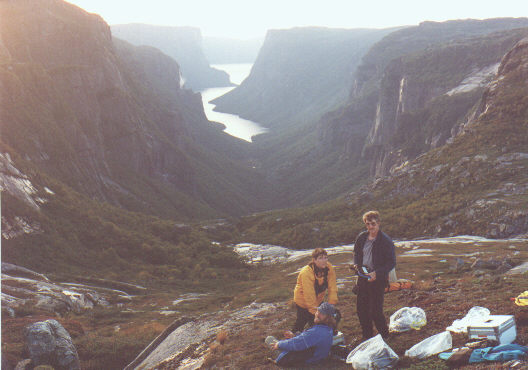
1,800 ft elevation ...... Western Brook Pond looking west .
Got to Gros Morne Park around supper, stopped in Rocky Hbr to get supplies. Parked on the old ferry wharf to eat , and 3 boys ran over to ask me lots of questions. Funny kids, told me what they had been doing all summer and where they were from. Then I drove around the end of Bonne Bay turning at Willowdale onto RT 431 to Woody Point, then up over the mountain towards Trout River . This is an amazing valley, green mountains on one side, and barren red rock slopes on the other. Years ago when it was a dirt road and I first saw it, I was reminded of desert country in Arizona or New Mexico.
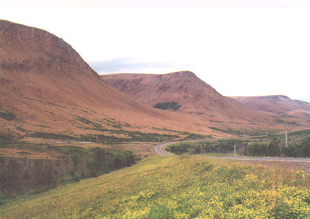......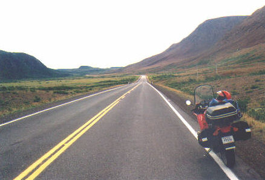
The road to Trout
River
The daylight was dying fast as I rode into Trout River, saw a gravel pit on the edge of town and decided to get the tent up before it was too dark to see. A number of cars and trucks were cruising up and down the big hill into town with their lights off at low speed, obviously looking for something....... I was puzzled. Later, my helicopter pilot told me that they were probably poaching ( which is highly illegal in the park ). Later a half ton truck came into the pit and 3 guys got out to peer over the edge of a hill........ looking for moose maybe ? They left and I went to bed in my rock cul de sac.
DAY 7: Drove down to the main street and had breakfast sitting on the boardwalk by a corner store. Lots of activity as the town extends the waterfront for tourists, building more facilities. All over Nfld I saw these make work projects for the summer, which add a lot of tourist attractions. Trout River is a small village that has finally in the last 15 years improved its financial base as part of the national park. Before the paved road it was on the edge of the money generated by the large National Park, and going to visit it in the seventies was a trip to a very basic lifestyle in an isolated community. It is nice to see it getting some benefits, but I am sure there is a strong streak of independence there common to areas taken over by the federal gov't........ like poaching, some old customs die hard.
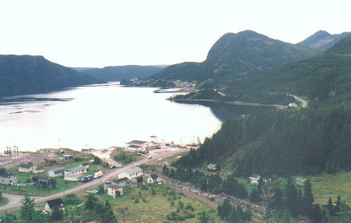
Woody Point
Headed back to Deer Lake about an hour away to catch a plane for St John's on the east coast. I had a one day commercial to work on for a friend there , so I left the bike parked at the airport for a couple of days. Flew east for an hour and spent the next day standing in a lake with the sun beating down, filming a fisherman sitting in a rowboat. Paid to play. We had the camera underwater with ducks swimming past. Spent the night in a B&B, got clean and flew back with a quick stop in Gander.
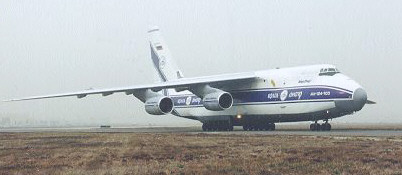
I saw an Antonov 124 sitting off to one side minus it's 4 engines. This plane was put into the mud last year off the runway and damaged a wing. It was pulled out and new engines fitted on one side, but I heard that the civil aviation authorities would not issue an air worthiness certificate to fly it out. It is the largest plane (now flying) in the world, holds more payload than a C5 Galaxy. Now it may become a permanent resident of Gander . Landed at a very rainy Deer Lake. Took the bike into town and did a load of wash at a laundromat/fast food place. Nice lady brought my food through the door into the laundromat when it was ready. More rain . . . . . .
I headed east to Grand Falls. While I was in St. John's , my camera assistant told me he had been home in Goose Bay that summer and the infamous 300 km dirt road to Churchill was being upgraded. Cars were doing the 550 km trip to Labrador City in 5 hours. That was all I needed to hear........ next stop, the far north. The 36 hour ferry trip from Lewisporte would leave late the next evening, so I had a day to get there. Had supper in Grand Falls and got out of the drizzle, then made it to Exploits River where I got a motel room for the night.
DAY 8: Got up to bright sunshine and drove east to Norris Arm where I mailed a small parcel home . I still had too much gear on the bike for the dirt roads up north, and wanted more room in the bags. Calculated how much clothing I needed for the next 5 days and threw anything else I didn't need in the parcel also. A couple of young boys asked me all about the bike and myself while I was on the ground sorting my junk. I thought about myself at 8 yrs old looking at a motorcycle. I could have been from the moon for all they knew, I think it was a big change from their routine to talk to a biker ' from away ' as they say in Nfld.
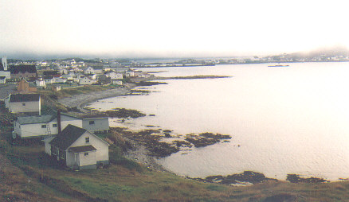
Twillingate
Stayed on the Trans Canada then turned north at Rt 340 up to Lewisporte. It was still early and sunny, so I cruised up 100 kms past Lewisporte to Twillingate on Notre Dame Bay just to see it again. The fog was rolling in and there were no icebergs in sight, so I turned around and slowly made my way back to Lewisporte and continued north to the road's end at Little Burnt Bay. I had some time to kill before the boat left at 10 pm so I hit a restaurant and bought my tickets, about $ 97 Cdn for me and $ 80 for the bike to Goose Bay , $ 177 total.
As I rolled onto the Sir Robert Bond car ferry, I noticed there were no other motorcycles. I would find out later from a road crew in Labrador just how many bikes they had seen this summer. We left port and I waited on a standby list for a cabin, but luckily for me there were none left. The interior of the ship was overheated for my liking, and the 4 berth cabins were very cramped from what I had seen, much smaller than the Nova Scotia to Nfld ferry run. It was clear and starlit on deck, so I found a nice sheltered spot behind a vertical steel wall about mid ships and laid out my thermo rest mattress and sleeping bag on the steel plate. If the weather looked bad I would have considered putting up the dome tent. It was a fantastic night, I watched satellites pass over and the seas were calm. We were travelling up the east coast of the Great Northern Peninsula, and would be sheltered until we crossed the Strait of Belle Isle between Nfld and Labrador the next morning. By about 1 am I was sawing logs.
Day 9: Woke up to bright sunshine and a few people walking around the deck. They probably were surprised to see a green bedroll slug on the deck. Went down below for a good breakfast in the cafeteria. Food was great and lots of it, the farther north you go in this country, the better the service I think. Many people are going home to Goose Bay, some are tourists driving RV's or trucks and plan to do the trip through Quebec.
We crossed into the Straits of Belle Isle about 8am and the ship started to roll more as it hit the exposed water. Saw my first decent sized iceberg about midmorning, a few hundred feet off the starboard side. Spent the day cruising a couple of miles off the Labrador coast, lots of icebergs inshore, grounded in the shallows. In the distance they look huge with the heights exaggerated by the refraction off the water, later they look much smaller when the mirage disappears. Some whales are spouting off to the port in the distance about a mile away, you can see their 'blow' hanging in the air after they dive.
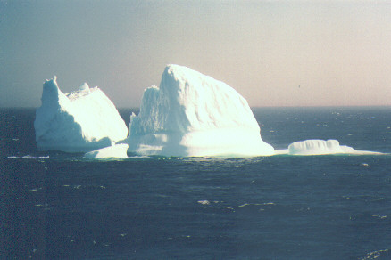
Long trip up the coast about 300 kms north past a rocky Belle Isle, then a turn west after dark into Groswater Bay which leads towards Rigolet, the only town I have seen today. It is brightly lit up by it's diesel generator, very close to us as we continue up the narrow passage here less than a mile across. As we thread along the twists and turns I think of the Amazon River which must resemble this type of navigating. The stars are out and I put down my swag on the deck again for another quiet night under the stars, only the hum of the engines interrupts the silence. We still have 170 kms to sail inland across Hamilton Sound and Lake Melville to get to Goose Bay and that will take all night. Someone comes outside to sleep in a bag about fifty feet from me, maybe they got tired of the heat or noise down below. Monkey see, monkey do.
Day 10: Woke up about 6am in the middle of a wide inlet ( Goose Bay) still steaming west . Lots of people on deck by 7am, looking ahead for the town. Countryside is fairly flat with lots of trees. We dock at about 8am. I go down to prep the bike and realize that unloading will take a while. There are lots of forklift loads of gear and goods plunked down at the front of the vehicles blocking the main ramp off. I get my hard bags and helmet, then hand carry them out onto the dock in the sunshine so I can retrieve the bike empty and prep it outside at my own pace. It is a great day, and soon will be 27 deg C ! Hard to believe when you go north .
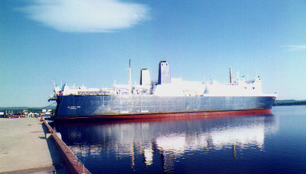
Unloading in Goose Bay
I head into town and drive past the huge air base that serves as a training facility for European low level fighter jets. Drive around the outside fence once, it is Sunday and very quiet. I stop at a Tim Horton's for breakfast, and talk to a fellow who has a Harley somewhere down south. The town centre is two main streets (all paved) which meet at a T junction where the 2 gas stations sit. I fill up with gas at about 75 cents/liter (not bad) and look for a photo to take. The only one that inspires me is a sign in front of a local bar. Later I learn that the beer is free until the first person goes to the bathroom ! If you leave the bar and go outside you are not allowed back in. Sounds like an interesting evening .
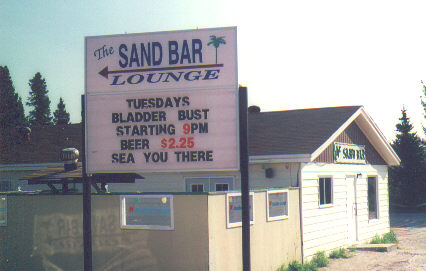........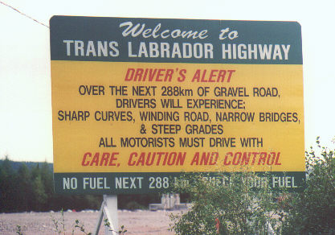
I put on my gear and head east to the start of the infamous Trans Labrador Highway. It doesn't take long to find it....here it is at the end of main street. There is a big sign warning you of the next 288 kms ..... and onto the dirt we go. It is wide and well graded, no potholes or ruts to speak of but plenty of gravel and dust. Better than I expected . The crews have been working hard by the look of it. I run for a half hour and enter a very sandy stretch of country, still lots of trees, but almost a desert feel to the ground under them. Big hills going down to creek crossings then back up. Road is still good.
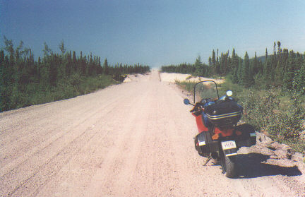
Dust on the horizon
The odd vehicle passes me, and I pull off when the big trucks come the other way, as the dust hangs for half a minute after they pass. It reminds me of the red bulldust in Australia that feels like talcum powder in your hand and hangs so long you have to space out 2 miles to follow a vehicle. It is getting really hot, the digital thermometer hits about 27 degs and it is only noon. I stop at a river and soak my T shirt then put it on wet under the leather jacket. This is usually good for half an hour or more, very comfortable. I try to watch the mirrors but get an adrenaline rush heading up a steep hill from a bridge crossing when a car blasts by at 100 kmph. Not much warning here, people drive fast to get this trip over, and if you don't scan the mirrors they will pass you uphill on the outside !
After a couple of hours I stop for a flag man, there are bulldozers and big Cat dump trucks blocking the way. Shutting off the motor , I strip down to my T shirt to cool off . A few of the heavy equipment guys wander over to chat. They tell me that they are blasting a culvert up ahead on a side section and it will be a few minutes. Fine by me, good chance to have a break. After the usual questions about where I am from and my destination , I ask them how many bikes they have seen on this stretch all summer.
" Well, only 3 or 4 before you, and most of them were off road bikes......" replies one guy. My suspicions are confirmed , the news is not out yet that the road is being upgraded. I pull out the camera and get a shot of the big trucks. After ten minutes I get tired of waiting and put it away..... too bad.... suddenly there is a big bang and a shock wave concussion as the road up ahead is catapulted 300 ft in the air in a cloud of dust. Large rocks are tumbling in slow motion out of the sky. Luckily we are well back of the danger zone. Obviously blasting mats are not a normal procedure here, just let her rip !
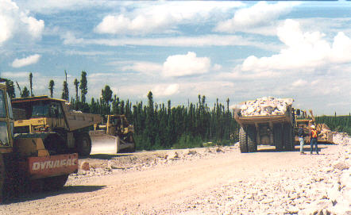
There are now 6 or 7 vehicles lined up behind me, including a motor home. The crew tells me to follow the bulldozer and watch out for sharp rocks. As we trundle along I can see that it will be a slow trip, but the dozer operator waves me past where the shoulder is 4 ft wider...... I am gone and probably will be ten minutes ahead of the traffic by the time they get free.
The road has many dips and curves weaving around small lakes and ponds. I stop for lunch by one of them and sit down on a sandy beach. Beside me is a surprise, some of the biggest blueberry bushes I have seen, hundreds of berries on each one. I am pulling them off in handfuls as the motor home goes by and waves. Paradise. Reminds me of flying a float plane ten miles out of Gander and taxiing up into the bushes by a lake, eating berries and watching moose.
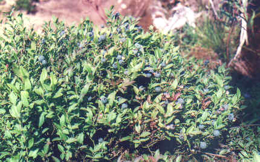
Back on the road again. The conditions are not too bad, you do have to pay attention to the loose stuff and pick your ruts , but it is not white knuckle riding if you keep your speed down. About once every half hour I get slightly out of shape on the gravel . . . . it is a good wake up call to take it easy. I average about 30 mph but the scenery is worth it. I had visions of feeling very isolated on this road but it is turning out to be a fun ride. I learned in Alaska to take my time and go slower as conditions changed, you can get over almost anything with the right attitude and no urge to rush. I think that is the hidden enemy on these trips, the urge to get to safety the sooner the better, your speed goes up and your chances of dropping the bike with it. The main area that gets tricky is crossing the gravel berm in mid road to change ruts, the bike always feels loose and snaky, but if you don't make any radical jabs on the bars it seems to find its own way over. I guess every rider gets his own technique for this eventually. If I stop to take a picture, cars often slow down to see if I need help. I usually give them a thumbs up before they pass me, or they will have to back up to talk after they stop.
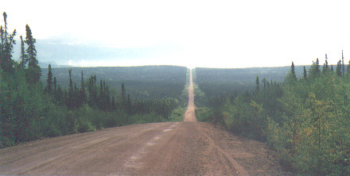
I often find I am cruising along on the flat stretches in overdrive . . . 5th gear at 2500 rpm.... about 75 kmph. This will help my gas mileage a lot as I later discover........ at first I was worried about making Churchill Falls on 26 litres if I spent a lot of time in 3rd and 4th. My consumption goes from 17kms/liter on the pavement to almost 22 on the dirt between Churchill and Labrador City. This puts my tank range at 580kms, and the main dirt stretch to Lab City from Goose Bay is only 530 kms ! Luckily there is gas at the company store at Churchill for most bikes with less range. Up here you fill up whenever you get the chance out of habit.
I pull into Churchill Falls about 5pm. It has taken 6 hours to cover 288 kms. I was probably off the bike for an hour all told, so average speed is about 60 kmph. There is some kind of strike by workers in progress, I see electrician pickets at some industrial gates when I drive past. The local store / garage has regular gas only, so I fill up. The lady behind the counter seems less friendly than the average I have met, I guess having a monopoly does that. Just another tourist....... I get the feeling if you don't work in that town you are not of much interest. I drive up behind the town onto a long earth dam that stretches out forever holding back a southern arm of the huge Smallwood reservoir . Infront of me there are big transmission lines that feed power across a deep valley and off towards Quebec. The power plant is underground and since it is Sunday plus a major strike at the gates I will not get a tour today. I wanted to see the largest underground hydro power facility in the world, but the day is fading fast. I still hope to take a chunk out of the 240 km stretch to Labrador City.
Leave town and immediately I am on a better gravel highway, straight and well maintained. There are still 3 main ruts of hard pan between the furrows, but longer straight stretches that allow 80 or 90 kmph in places. It is fairly consistent, no big changes in elevation, no deep ravines with bridges at the bottom, no sharp corners without warning. For a gravel road it is a gift on a bike.
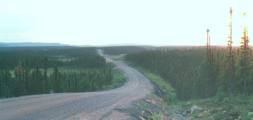
I see a car every 20 minutes or so. After an hour I enter an strange area. As far as the eye can see to every horizon the forests have been burnt, all that's left are grey tree trunks for miles. I continue through the Big Burn as I call it for at least half an hour doing 70 to 80 kmph ! It looks like an older fire, sometime in the last ten years. The fires I saw in the Yukon last summer are mere babies compared to this one. From the air it must be even more impressive.
It has become overcast and the light is falling fast, so I pull off on the gravel shoulder by a lake. I put my tent up on the shoulder of the road where there is a wider stretch because there are no easy spots in the woods to get too, mostly marsh and bog or old tree debris. A couple of 18 wheelers fly by heading east . It is unusually quiet here, the wildlife is probably a fraction of what it used to be before the fire.
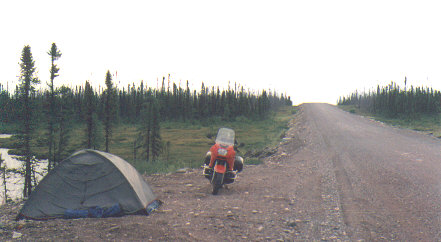
My odometer reads 410 kms, all done between 11am and 8pm. It feels farther, but I have never had to do more than 200 kms of dirt before in one stretch , even in Alaska. I am happy with the RS and it's suspension on the gravel. The ABS brakes are great on the dirt, especially the rear wheel . Some people dislike them, but I will use better technology on two wheels whenever I can. Losing the back end of a bike vrs having ABS makes no sense to me, having come close a few times in the old days when I started riding 30 years ago. Open some sardines, bananas and cheese, then go to bed. I am tired and the thermorest feels great. Outside it is still warm, maybe 15 deg C.
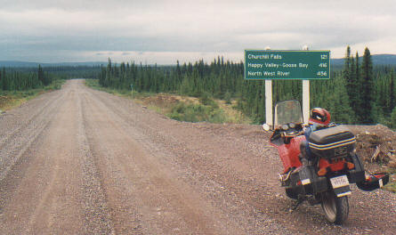
Road sign looking east between Churchill and Labrador City
Day 11: Some light rain during the night, but it holds off when I get up long enough to pack. My Goretex riding boots will get a workout today . The gravel is not as dusty , and the odd car going by leaves no trail behind. I cover the last 170 kms to Labrador City in about 2.5 hours. The rain is off and on all the way.
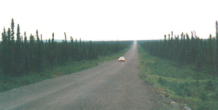......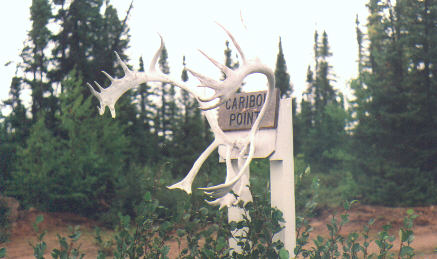
No dust.... just rain ....
Caribou antlers
I find a good restaurant by asking the locals, and chow down on a big breakfast. Lab City looks bleak and industrial but has lots of gas stations and at least 2 hotels. . I drive around to get more of a feel for it, but the large iron ore trains are the only diversion on this wet, dreary day. I am keen to head south and see more road . It is Monday now I have a couple days left before I need to get home , I have an extra day if I need it considering the possibilities of breaking down or worse. The weather is driving me south now that there is more pavement up ahead .
I leave Lab City about 1pm and enjoy the good pavement that goes south 40 kms through the town of Fermont to Mount Wright, an open pit mine.
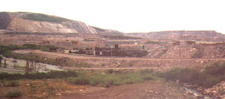
I watch the big 150 ton Cat trucks coming down the mine road on the other side of the fence to dump their loads. Then I head onto the mud/dirt road again and the weather starts to improve. I am now on the infamous winding 70km stretch that follows the railway track south and used to cross over about 15 times. Today there are only 8 crossings and the road seems almost enjoyable as it snakes around all the lakes and rock outcrops. It is the twistiest stretch on the whole trip, but the gravel seems well maintained. My friend did it years ago when it was a demon, lots of sand in the hollows and bad rail crossings. There are still sand warning flags planted every few turns, but nothing bad I could feel under me. One of the last crossings is blocked by a long work train laying down huge sections of welded track beside the roadbed. I stop and shed some clothes while one of the workmen comes over to talk. It will take at least 20 minutes for the train to clear the level crossing. He is surprised I started in Halifax and made it all the way from Goose Bay. When they clear the road I have a big tanker truck behind me so I pull over and give him a head start. They travel fast on the dirt, and I don't need one breathing down my neck on this road .
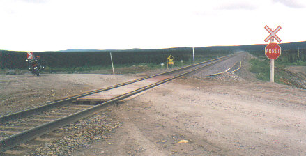
At Fire Lake the pavement appears again, it is 90 kms of first class road to Gagnon. Speeds of 100 kms are easy to maintain, long straight stretches and good corners. The weather is bright but overcast, road is dry. It feels like being on a race track after the last 2 days, and I open up the motor for the next hour. Traffic is still rare. At the end of this stretch is the ghost town of Gagnon..... or should I say ghost boulevard. There are no houses to be seen, but the pavement becomes divided for a kilometer and the curb shows driveways at regular intervals going into the grass on both sides. I believe they pulled up the whole town when the local mine ran out, not a trace is left but the gaps in the curb.
From Gagnon I began the last piece of dirt road, and it turned out to be the worst. For 175 kms south to the pavement at Manic 5 dam, it was hard work. The rain had started again and there were many hills to climb on this more narrow road. There seemed to be more dirt than gravel in places, and going down steep hills into the bottom of unknown mud/sand/gravel corners before you climbed back up again was becoming a trip into the unknown. A few times I was on the verge of going down when I somehow recovered the snowplow front end . The other problem with this stretch is the corrugated hard packed bedrock in the ruts going uphill, and driving left or right didn't seem to improve it. I just had to slow down and grit my teeth. About 75kms down is the Motel Relais Gabriel, a welcome pit stop. They have rooms of sorts, food and gas. I peeled off my dripping rainsuit, and let it hang on the porch. Inside I ordered a grilled cheese and bacon sandwich in French , and enjoyed the peaceful view outside to the gas pumps. Only a couple of cars came in to gas up while I was there.
The rain had eased up as I continued south, but the conditions were about the same. It is probably the narrowest road I had been on, and going over the hills it is safer to stay to the right as a precaution. I was looking forward to a motel bed in Manic 5 where I had to gas up, by then it would be 600 kms for the day. About supper time I came off the dirt onto pavement and went down a steep hill past the front of the dam. This is one of the most impressive dams I have seen anywhere.
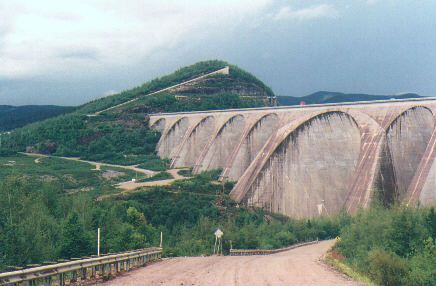......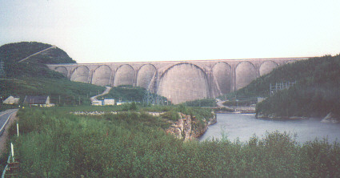
I took some pictures , then pulled into the motel for gas. " No rooms left " the lady at the cash told me. Well, so much for taking it easy tonight. I decided to use the hour of daylight left to push hard towards Baie Comeau , 220 kms south on the St Lawrence River. Then when it got dark I would slow down and maybe follow someone else's headlights.
This plan worked well, I had the road all to myself and made good time for the first 120 kms. It is well maintained with a smooth surface and hundreds of curves . There were a lot of log trucks going south loaded. By the time it got dark I had passed about 8 of these and decided to tuck in behind a couple of cars who seemed to know every corner. Their headlights made the next hour relatively easy and I did not have to worry so much about animals getting in my path. I used my 100 watt highbeam on the corners when the cars swept ahead of me around a bend. It would be a nice ride in daylight up to Manic 5 with any kind of sport bike. About 10 pm I pulled into Baie Comeau and grabbed a motel room on the strip for about $ 45. For an hour I lay in the hot bathtub ........ the bike and I have covered 800 kms today and half of that was dirt.
DAY 12: I Leave the motel at 7am to catch the ferry. It sails from Godbout in the morning, and Baie Comeau later in the day on a second trip across the St. Lawrence river. I will go east 60 kms to catch it at Godbout. Nice sunny day, trip along the north shore is pretty, good pavement and sweeping curves as it follows the coast up and down hills. Get into the small ferry terminal, about 30 cars and log trucks waiting. No bikes. I notice a fellow missing his right arm and left leg, sitting at a picnic table, probably in his 30's. When he walks he does it with a single crutch, and moves fairly well. Just as the ferry docks he goes down the line of cars from the front to the end asking for money. Then he heads for the corner store nearby and buys some smokes. I guess this is a daily ritual for him, and ensures a regular income of sorts.
We get on the boat and I tie down next to some big log trucks. The trip is about 90 minutes to Matane on the south shore. It gets foggy so I lay down on some rear benches and have a snooze. We unload at Matane and I head south for home. There is not much to report on this section, a fast trip 800 kms through Quebec and northern New Brunswick..... Campbellton, Bathurst, Chatham, Moncton, then Halifax. Once south of Campbellton it is mostly 2 lane superhighway, then 4 lane after Moncton to home for the last 200 kms. I get into the driveway about 8pm. I have covered 2000 kms from Goose Bay in the last three days, 800 of it unpaved .
It has been a faster trip than I expected, and maybe even more fun than my one to Alaska. There is a feeling in Labrador that is hard to describe, but it makes you want to go back. The people are great in Nfld & Labrador, and if you did break down there would always be someone along to help you out . It's the east coast way of life. Nothing is impossible to a Newfoundlander, just another small problem to solve.
If you ever have a chance to read about the great ice captain Bob Bartlett from Brigus, who landed Cmdr Peary at the North Pole, and walked to Siberia 600 miles from the Bering Sea to report and rescue his crew marooned on Wrangell Island, you can get a feel for the real Newfoundlander spirit.
Luckily I made the trip without any punctures. One piece of advice I would have is to carry a spare tube in case you get a flat on tubeless tires , and also ( but not only ) a good patch/plug kit with CO2 cartridges. You will need a fail safe method to break your tire bead if a plug doesn't work and a tube is needed. I carry patches, an 18 inch tube which will do in either tire , and a Pro Lev'r Tire Wizard . This unit is my choice to get a tire off any rim in the boonies if you don't want to rely on a truck ride to the next gas station.
If you're thinking of going to Goose Bay, it is a great trip, and it doesn't require an off road bike, although a GS would be perfect . Take your time and use common sense, just slow down when conditions require. The road is hopefully getting better every year ( please sign the guestbook with new conditions if you found it has changed ).
Go see Canada . . . . before they pave it all .
------------------------------------------------
Drop me a line if you have any questions at :
nitroblue@hotmail.com
Here is a website for
all the Nfld and Labrador ferries ,
it has
their fares and schedules........
http://www.gov.nf.ca/ferryservices/schedules.stm
Here
is a website for the BMW Owners of Nova Scotia ,
it also
has links to local rides in our province.